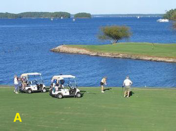
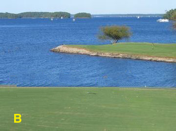
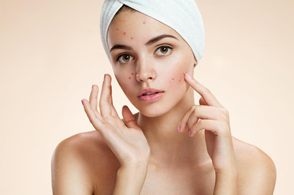
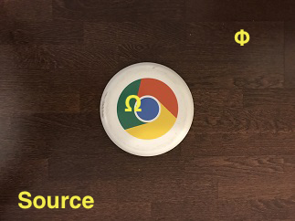
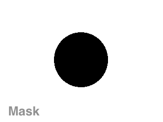
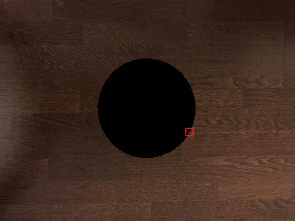
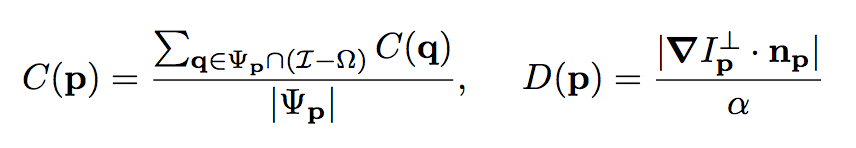
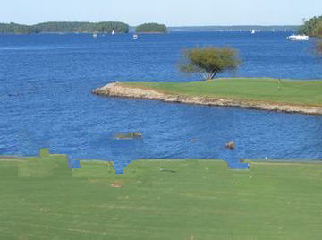

Exemplar-Based Image Inpainting
What it does
Exemplar-Based Image Inpainting is an algorithm that removes objects from digital images and replaces the hole left behind with visually plausible textures. It allows the user to specify one or more objects in the image that they would like to remove and the algorithm will magically erase the object(s). You can read about the research here.
An example of the input (left) and output (right) is shown below.


A practical application of this algorithm is acne removal from digital photos.

How it works
First, we provide the algorithm with a source image (left) and with a mask image (right) to indicate the region we want to remove (shown in black). We denote the region we want to remove as Ω (the unknown pixels) and the region we want unaltered as Φ (the known pixels).


Given the region we want to remove, we find its contour with OpenCV's findContours function. For each point on the contour, we create a Patch object to represent a 9x9 patch of the image with the contour point as the center of the patch. We select one of these patches and replace it with the most similar patch from Φ. After we replace the patch, we update the contour and determine the patches on the contour that still need to be replaced, another patch is selected and the process repeats until all patches are replaced. The process is shown below with the patch on the contour shown in red and the most similar patch shown in green.

Each patch is assigned a priority value so that the patch to be replaced is not selected at random. The priority value is the product of two terms, the confidence term denoted C, and the data term denoted D, and they are defined as follows:

The confidence term is the sum of the confidence values of all known pixels in the patch divided by the area of the patch. During initialzation, all known pixels are given a confidence value of 1 and all unknown values are given a confidence value of 0. The data term is computed by normalizing the magnitude of a dot product with a normalization factor α, with α = 255. The dot product involves the vector orthogonal to the gradient of the image at the patch's center, and the unit normal of the contour at the patch's center.
The priority value is critical because it allows us to fill in the removed regions in an order that correctly propagates linear structures, and is robust to changes in the shape of the region. More specifically, the confidence term reduces the sharp out-pointing appendices in the contour and the data term encourages the continuation of image structures. For more information on the confidence and data terms, please see Figure 6 in Region Filling and Object Removal by Exemplar-Based Image Inpainting by A. Criminisi, P. Pérez, K. Toyama.
Without the priority value, there will be no order for selecting a patch for replacement, and the algorithm will produce results with optical artifacts as shown below.

Get the code
The code is available on GitHub